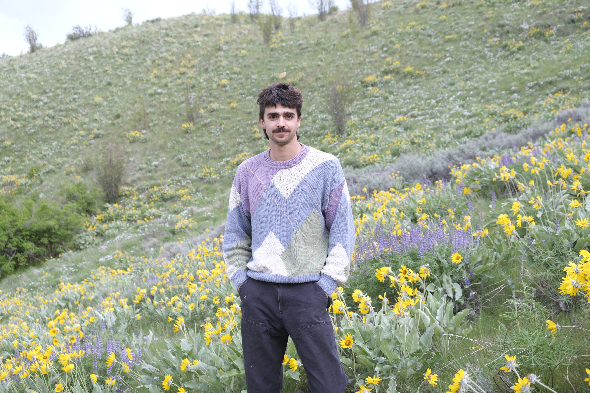

Software Engineer, Educator, and Outdoor Enthusiast
About
Hello, welcome!
My name is Leif Nyland, and I am passionate about computers, mechanical design, and the outdoors. I graduated from Appalachian
State University with my BS in Computer Science with departmental honors, and spent several years working for Boom Supersonic, Inc. working on
control law failure testing and weather data analysis. I recently spent some time traveling around North America to focus on my passion for skiing,
and I am now looking to jump back into my work with computers and mechanical systems.
This website is for me to use to display a portfolio of projects I find fun and engaging, so please consider this projects to be a reprisentaion of my
interests and abilities.
I have recently been inspired by two ideas: the Boom Prize for for small scale supersonic airbreathing flight, and using e paper displays as a more pleasant
human-computer interface for specific computing tasks. I have been using these projects to learn about internal combustion engine variations, high speed airframe design,
and the basics of embedded computing.

Projects
Mechanics/Engineering/Aero
- Maggie Muggs Ramjet v1 (WIP) — First attempt to recreate Maggie Muggs low speed ramjet by Larry Cottrill
Graphics
- C++ Ray Tracer — Current project on ray tracing, and hopefully multithreading
Machine Learning
- Terrain Image Compression — Using DNNs for image compression
- Robots Game — Using adversarial networks to explore a complex strategy game.
Data Collection & Processing
- Ski Price — Data collection and processing using web scraping.
Systems
- Y86 Simulator — 5 stage pipeline architecture simulator.
Functional Programming
- Arithmetic and Boolean Language Lexer & Parser — Simple language lexer and parser in Haskell.
- Numerical Sieves — Some fun numerical sieve exploration in Haskell.
Algorithms
- NQueens — NQueens problem as an assignment
- Collatz — Collatz sequence problem
- Island Tour — Count the number of islands in a grid of land and sea tiles
Interfaces & Apps
- Tracing App — Android drawing app which traces over images
Computational Photography
- HDR Pipeline — Explore some basics of stiching multiple photos together to maintain detail throughout a high dynamic range
Skills
Data Analysis & Machine Learning
- Deep Learning (Keras, Convolutional Layers, Adversarial Learning)
- Statistical Analysis (R, Python, Excel)
- Data Visualization (GGPlot, Matplotlib)
- Data Processing & Cleaning (Dask, Pandas, Xarray)
- Database Design (SQL, NetCDF)
Software Engineering & Web Design
- Development Methodologies (Agile, Waterfall)
- Version Control & Testing (Github, Maven)
- Frontend Development (HTML, CSS, JavaScript)
- Database Management (SQL, AWS)
- API Development & Integration (RESTful APIs, Postman)
Algorithmic & High-Performance Computing
- Cache & Memory Conscious Code
- Mutlithread Computing (Compression Algorithms, Data Processing)
- Functional Coding & Natural Language Processing
Engineering & Modeling
- Program Function Testing & Verification
- Engineering Requirement Creation
Education
- Group Management
- Group Dynamics & Culture
- Program Safety & Evacuation
- Leadership Development & Support
Buisness Management
- Financial Planning
- Advertizing
- Customer/Company Relationships
Woodwork/Ceramics/Steel
- Over 10 years in wood carving and sculpture
- Slab, wheel throwing, and freeform sculpture
- Primitive clay collection, processing, and firing
- Steel Forging
Machinery/Electronics
- Remote control circuitry
- Automotive Maintanaince
- Mechanical Design
Personal Skills
- Problem-Solving & Critical Thinking
- Pursuit of Knowledge & Education
- Effective Communication & Team Collaboration
- Time Management & Organization
- Leadership & Mentorship